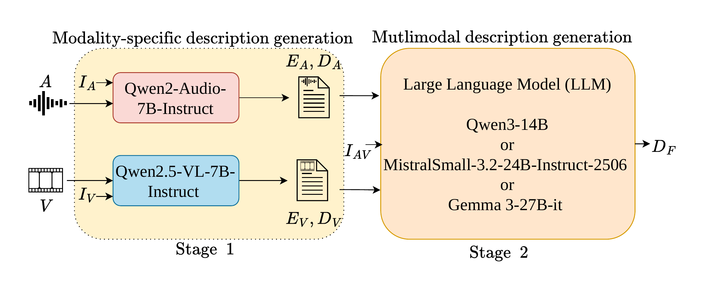
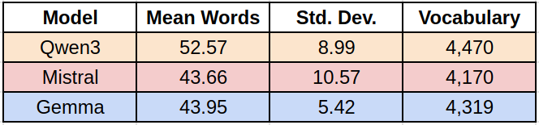
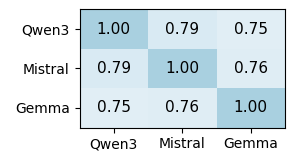
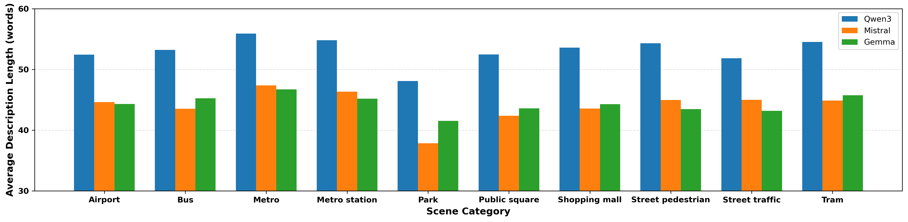
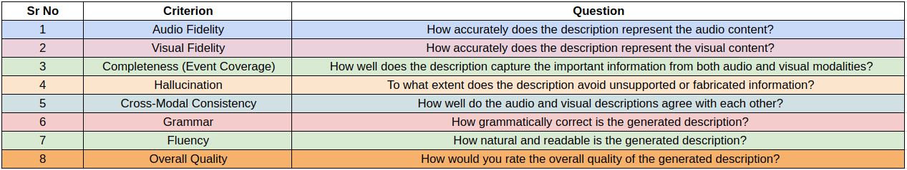
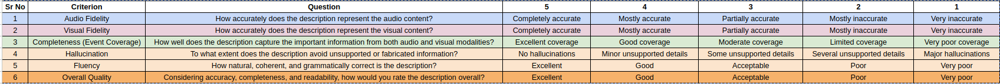
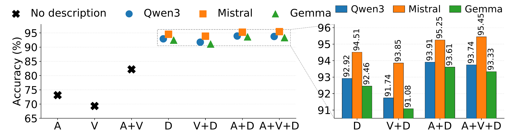
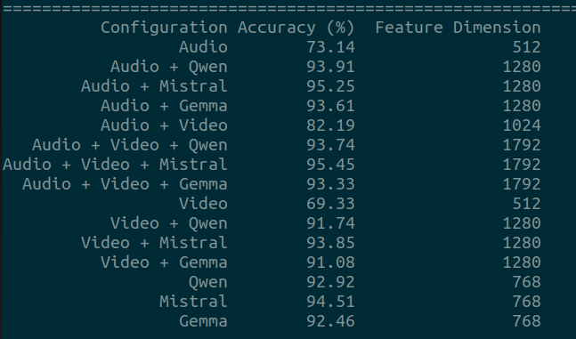
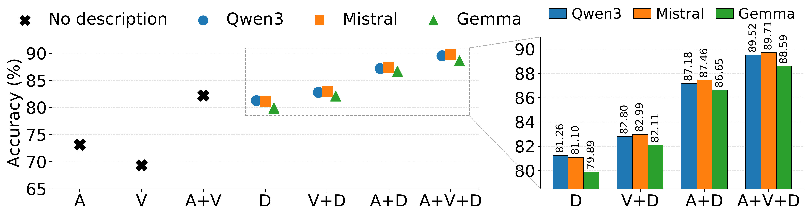
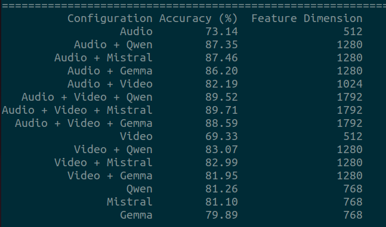

Natural language descriptions can provide rich semantic representations of audio-visual urban scenes, yet datasets that jointly describe both auditory and visual information remain limited. In this paper, we introduce AVSD-Scenes, a paired audio-visual scene description dataset for urban environments. The dataset contains 12,291 audio-visual scene descriptions generated from the TAU Urban Audio-Visual Scenes dataset. To construct the dataset, we first generate audio- and visual-based descriptions using Qwen2-Audio-7B and Qwen2.5-VL-7B, respectively. These modality-specific descriptions are then combined using large language models, namely Qwen3-14B, Mistral-Small-3.2-24B-Instruct-2506, and Gemma-3-27B-it, to produce multimodal descriptions that capture complementary information from both modalities. We benchmark AVSD-Scenes using semantic alignment, cross-modal retrieval, scene classification, LLM-as-a-judge evaluation, and human subjective assessment. Results show that multimodal descriptions improve semantic alignment and cross-modal retrieval performance compared with modality-specific descriptions while preserving strong scene-discriminative information. The generated descriptions achieve up to 94.5% accuracy in urban scene classification, while combining audio, visual, and description embeddings further improves accuracy to 95.4%. Furthermore, the descriptions remain highly scene-discriminative even when scene labels are removed from the prompting instructions, indicating that they capture semantic information derived from the audio-visual content rather than merely reflecting label information. The code is available at GitHub Link.










A: Audio, V: Visual, D: Multimodal Description.
Qualitative comparison of descriptions generated with and without scene labels in the instructions.
| Scene Label in Instruction | Qwen3 | Mistral | Gemma |
|---|---|---|---|
| ✓ Yes | A person in a maroon jacket with a fur-lined hood sits on a red seat inside a tram, holding a piece of paper and adjusting their hair. Another person is partially visible across the tram, resting or sleeping. The audio includes intermittent rattling and scraping sounds, along with a continuous low hum, suggesting the tram is in motion. | A person sits on a red seat inside a tram, holding a piece of paper while adjusting their hair. The tram produces a low humming sound along with intermittent rattling and scraping noises as it moves. | A person wearing a maroon jacket sits on a red seat, holding paper and adjusting their hair while riding a moving tram. Throughout the scene, rattling and scraping sounds accompany a low humming noise, suggesting vehicle movement. Another person sits across the tram. |
| ✗ No | A person in a maroon jacket with a fur-lined hood sits on a red seat inside a vehicle, holding a piece of paper and adjusting their hair. A second individual is partially visible across from them. The audio includes a continuous hum, sporadic loud impacts, and a final beep, along with intermittent static. | A person sits on a red seat inside a vehicle, holding a piece of paper while adjusting their hair. A persistent humming sound accompanies sporadic loud impacts and a final beep, with static present throughout. | A person wearing a maroon jacket sits on a red seat inside a vehicle while holding paper and adjusting their hair. Throughout the scene, a persistent humming sound and sporadic loud impacts are audible, along with static. A brief beep occurs near the end of the recording. |
| Scene Label in Instruction | Qwen3 | Mistral | Gemma |
|---|---|---|---|
| ✓ Yes | A cobblestone street is lined with buildings, showing pedestrians walking and some carrying bags. A few individuals sit at outdoor tables near a shop with a green sign featuring white lettering. Audio includes group conversations, a woman speaking loudly, footsteps, a soft male voice, and eventually only the sound of someone walking. | On a cobblestone street lined with buildings, several pedestrians walk while others sit at outdoor tables near a shop with a green sign. Conversations and footsteps are heard, with a woman speaking loudly before the voices fade, leaving only the sound of someone walking. | People walk along a cobblestone street past buildings and a shop with a green sign. Throughout the scene, conversations and footsteps can be heard, with multiple individuals speaking at different volumes. Eventually, only the sound of footsteps remains as people continue walking. |
| ✗ No | The video shows a cobblestone street with buildings on both sides, where several people walk, some carrying bags, and a few sit at outdoor tables near a shop with a green sign. The audio includes a gradually increasing background hum, overlapping with continuous footsteps, and a brief high-pitched tone near the end. | A cobblestone street lined with buildings features people walking and others seated at outdoor tables near a shop with a green sign. A background hum grows louder before fading, accompanied by footsteps. A brief tone sounds near the end. | The scene depicts a cobblestone street with buildings and people walking, some carrying bags. Throughout the recording, footsteps can be heard alongside a background hum that increases in volume. Near the end, a brief, high-pitched tone is audible while people continue to walk past a shop with a green sign displaying white lettering. |
| Scene Label in Instruction | Qwen3 | Mistral | Gemma |
|---|---|---|---|
| ✓ Yes | A bus interior shows passengers seated on red and gray checkered seats, some gazing out the large windows. Engine hums continuously, accompanied by repeated loud thuds and brief beeps throughout the scene. | Passengers sit inside a bus with red and gray seats, some with a checkered pattern, while an engine idles and hums throughout the scene. Loud thuds and brief beeps occur intermittently. | The interior of a bus contains passengers seated on red, gray, and checkered patterned seats, some looking out the windows. Throughout the scene, a consistent engine hum is present alongside repeating loud thuds and brief beeps. |
| ✗ No | A bus interior shows passengers seated and standing, with a mix of red and gray seats, some checkered. A continuous engine sound is present, accompanied by intermittent impact noises. | Passengers sit and stand inside a bus with red and gray seats, some featuring a checkered pattern. An engine runs continuously while impacts occur intermittently. | The interior of a bus with seated and standing passengers is visible, where seats are red, gray, or checkered. Throughout the scene, an engine is running alongside recurring impacts. These impacts happen at intervals, continuing throughout the duration of the recording. |
| Scene Label in Instruction | Qwen3 | Mistral | Gemma |
|---|---|---|---|
| ✓ Yes | A nighttime street scene shows cars driving with headlights and taillights creating streaks of light under streetlights. A vehicle's engine runs continuously before accelerating rapidly, while another vehicle passes intermittently. Palm trees line the road, and a stone balustrade runs along the right side. | Cars drive along a nighttime street under streetlights, their headlights and taillights creating streaks of light. A vehicle's engine runs continuously, accelerating rapidly at times, while another vehicle passes by intermittently. Palm trees line the road, and a stone balustrade runs along the right side. | Cars drive along a nighttime street illuminated by lights, their headlights and taillights appearing as streaks. Throughout the scene, a vehicle engine runs while another vehicle passes by intermittently. Towards the end, a vehicle rapidly accelerates. Palm trees and a stone balustrade line the road. |
| ✗ No | A nighttime city street scene shows cars driving with headlights on, flanked by palm trees and ornate lampposts, with a classical-style building in the background. The audio includes a gradually increasing humming sound that peaks before fading, accompanied by cars passing by with roaring engines, which continue to echo in the background. | Cars drive along a city street at night, their headlights illuminating the road. Palm trees and ornate lampposts line the street, while a large building with classical architecture stands in the background. A distant humming sound grows louder before fading, accompanied by the roar of passing cars. | Cars drive along a city street lined with palm trees and lampposts, illuminated by headlights during the night. Simultaneously, a humming sound grows louder before fading, accompanied by the continuous sound of passing car engines. A large building is visible in the background. |
| Scene Label in Instruction | Qwen3 | Mistral | Gemma |
|---|---|---|---|
| ✓ Yes | A metro station scene shows a person in a striped shirt and shorts standing near a pillar, facing away from the camera while looking at a screen. Another individual, partially hidden by a column, walks by carrying a bag. Soft music plays in the background, and a train passes by repeatedly, blowing its horn at intervals. A man’s voice is briefly heard before fading out. | In a metro station, a person in a striped shirt and shorts stands near a pillar, looking at a screen. A train passes by, blowing its horn intermittently, while soft music plays in the background. Another person walks past, carrying a bag. | A person in a striped shirt and shorts stands near a pillar, looking at a screen, while another person walks by carrying a bag. Throughout the scene, a train passes with its horn sounding, accompanied by distant music, and a man’s voice briefly speaks before fading out. |
| ✗ No | The video shows a person in a striped shirt and shorts standing near a pillar, facing away from the camera while looking at a screen, and another individual partially hidden behind a column holding a phone. The audio includes a muffled background track and a continuous hum for the first 10 minutes, followed by a sequence of loud pops and bangs before the hum continues alone. | In a subway station, two people are present: one standing near a pillar while looking at a screen, and another seated nearby holding a phone. Throughout the scene, muffled music and a consistent humming sound play in the background. Near the end, a series of loud pops and bangs occur before the humming continues. | The scene inside a subway station features a person in a striped shirt and shorts standing near a pillar, looking at a screen, while another person sits holding a phone. Throughout the recording, muffled music and a consistent humming sound play, transitioning to loud pops and bangs before the humming continues to the end. |
| Scene Label in Instruction | Qwen3 | Mistral | Gemma |
|---|---|---|---|
| ✓ Yes | A bustling public square features a large, ornate building in the background while people walk and stand around. A person holds a smartphone in the foreground. Distant music plays alongside soft speech from a child and a woman, interrupted by a dog’s bark, passing bus, wind, and a brief instance of static. | In a public square, people walk and stand near an ornate building while a person holds a smartphone. Distant music plays alongside soft speech from a child and a woman, followed by a dog barking and a passing bus. Wind blows into the microphone, and static noise briefly appears before the recording ends. | The recording features a bustling public square with people walking near a large, ornate building. Sounds include distant music, speech from a child and woman, a passing bus, wind, a dog barking, and brief static noise. A person in the foreground holds a smartphone. |
| ✗ No | A large, ornate building, possibly a cathedral, is visible in a bustling square with people walking and standing on cobblestone. A person holds a smartphone in the foreground. In the audio, a soft song plays, followed by fading footsteps and a child’s voice with a faint whistle. Another song begins as the footsteps recede, and a car engine revs up before fading out. | A person stands in front of a large, ornate building in a busy square while holding a smartphone. In the background, people walk and stand on cobblestones. A song plays softly, followed by footsteps and a child’s voice. Another song starts louder, and a car engine revs up. | The recording begins with a song playing as people walk around a square featuring a large building. Footsteps fade into the distance alongside a child’s voice and a faint whistling tone, then another song starts. A car engine revs up and fades out towards the end of the recording. |
This work was supported by the Engineering and Physical Sciences Research Council (EPSRC) under Grant EP/Y028805/1.
For the purpose of Open Access, the authors have applied a Creative Commons Attribution (CC BY) licence to any Author Accepted Manuscript arising from this submission.